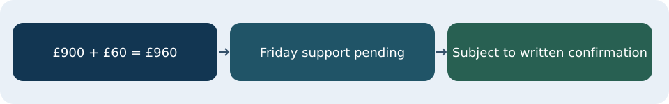
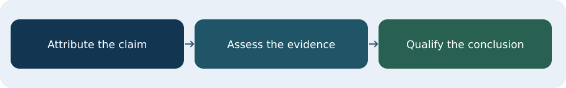

Objetivo general del curso Desarrollar la comprensión de textos y conversaciones extensos, argumentar con matices, negociar decisiones y adaptar información para preparar B2 First o la certificación de la EOI.
Requisitos de entrada B1 consolidado. Puedes seguir ideas principales, escribir párrafos conectados, narrar hechos y explicar una decisión.
Docente Rubén Muñoz Valadés
Escucha sin mirar el texto, escucha otra vez para apuntar datos y abre la transcripción para comprobar. Repite la frase, modifica un dato y recupera la respuesta sin apoyo. Los diálogos usan dos voces sintéticas estadounidenses. Las situaciones, datos y empresas son ficticios.
1. Intervenir y disentir en una reunión
Objetivo general de la unidad Intervenir con fluidez en una reunión, matizar un desacuerdo y cerrar con un acuerdo que recoja condiciones y responsables.
Temporalización 300 min en dos sesiones, según la programación.
Modelo de tres pasos. Lee de izquierda a derecha y sustituye un dato por otro de tu contexto.
Tomar y ceder la palabra
Usa Can I pick up on that point? para enlazar con lo anterior. Resume de forma comprobable con If I’ve understood you correctly. Devuelve el turno con Does that address your concern? Acentúa la palabra que corrige el malentendido.
If I’ve understood you correctly, your concern is the handover, rather than the timetable itself.
Desacuerdo diplomático sin perder precisión
I see the rationale, but… reconoce la razón. I’m not sure that follows cuestiona la inferencia, en lugar de atacar a quien la formuló. Cita la condición que falta y ofrece una prueba limitada.
I see the rationale, but I’m not convinced the results will apply to the evening shift.
Cerrar con reservas y obligaciones
Subject to introduce una condición de la que depende un acuerdo. For now delimita su vigencia. Registra objetivo, persona responsable, plazo y condición de revisión.
Subject to the evening team’s agreement, we’ll run a two-week trial. Priya will check coverage by Friday.
Vocabulario de la unidad
pick up on
retomar un punto
rationale
justificación
subject to
sujeto a
coverage
cobertura de personal
minutes
acta
Comprensión y práctica oral
Escucha una vez y escribe quién habla y qué necesita. A la segunda, apunta dos datos de la conversación. Contrástalos con la transcripción. Después reproduce una frase, pausa y respóndela con un cambio de persona, fecha o lugar aplicable al caso. Haz tres rondas con notas, sin notas y con un dato sorpresa.
Preguntas de escucha ¿Por qué la segunda persona objeta al horario? ¿Qué condición pone al canal escrito?
Diálogo de la unidad
Practicar con el micrófono
Escucha el modelo y repite. El resultado compara la transcripción del navegador con el modelo. Escucha el audio para practicar los sonidos y el ritmo.
El curso no graba tu voz. Tu navegador puede usar un servicio externo de reconocimiento.
El navegador oyó
Leer la transcripción
AI’d like us to test a single handover at four instead of asking staff to attend two short meetings. The morning team has already said it would free up time.
BCan I pick up on that? The evening team starts at five. Unless we give them another route to raise problems, they’ll receive decisions without having a chance to influence them.
AFair point. What if we make the four o’clock meeting a trial and leave a written channel open until six?
BThat would address my main concern, provided members of the evening team can see who is responsible for each issue.
AAgreed. Let’s check coverage by Friday and review unresolved cases after two weeks.
Lectura aplicada
The service team currently holds two verbal handovers each day. Managers proposed one mixed meeting after the morning team recorded a reduction in time spent repeating updates. The trial would save around fifteen minutes per day for staff who currently attend both meetings. The figures do not include the evening shift, which joins at five and has recorded more unresolved customer cases than the other shifts. The coordinator suggests a single meeting at four and an open written channel until six. Each submitted issue would need a named owner and a response time. The plan is limited to two weeks, and the team will review how many evening cases were resolved within the usual time. Before launch, Priya must confirm that someone will monitor the channel during the evening shift.
Comprueba lo que has entendido ¿Qué ahorro se estima, qué grupo no está representado en la evidencia y qué se debe comprobar antes del piloto?
Caso guiado resuelto
Objetivo Intervenir con fluidez en una reunión, matizar un desacuerdo y cerrar con un acuerdo que recoja condiciones y responsables.
Tiempo y material 30 min · enunciado, glosario y cuaderno.
Enunciado Eres responsable del turno de tarde. Resume la propuesta, formula una objeción concreta y ofrece una alternativa que se pueda probar.
Parafrasea la propuesta e identifica a quién dejaría fuera o qué problema crearía en el turno de tarde.
Formula la objeción como un límite de aplicación, citando la circunstancia concreta.
Propón una prueba con responsable, plazo y una medida observable para evaluarla.
Cede la palabra con una pregunta de respuesta abierta e incorpora una objeción en tu segunda versión.
Resultado esperado y criterios Intervenir con fluidez en una reunión, matizar un desacuerdo y cerrar con un acuerdo que recoja condiciones y responsables.
Modelo resuelto
If I’ve understood correctly, we’d hold one meeting at four. I see the rationale, but the evening team would miss the chance to raise problems. Could we leave a written channel open until six, with a named owner for each case? Subject to coverage, we could review the results after two weeks.
Práctica individual
Objetivo Respuesta comprensible que conserva los datos de la consigna y usa dos expresiones trabajadas.
Tiempo y material 35 min · cuaderno y cronómetro.
Enunciado Redacta un acta breve con propuesta, reserva, acuerdo, responsable e indicador. Distingue el dato de ahorro previsto de un resultado ya medido.
Prepara un borrador siguiendo la consigna.
Lee tu respuesta en voz alta y comprueba que satisface cada requisito.
Cambia un dato concreto y revisa qué parte de tu respuesta debe adaptarse.
Resultado esperado y criterios Respuesta comprensible que conserva los datos de la consigna y usa dos expresiones trabajadas.
Simulación y dinámica en parejas
Objetivo Los dos papeles intervienen, comprueban un dato y cierran con una decisión entendida por ambas personas.
Tiempo y material 35 min · dos tarjetas y hoja de observación.
Enunciado Un portavoz quiere implantar el cambio inmediatamente. Otra persona conoce la falta de cobertura del turno de tarde. Negociad una prueba con una condición y un indicador.
Repartid los papeles y preparad la información por separado.
Haced una primera ronda y pedid una aclaración antes de decidir.
Intercambiad papeles y modificad un dato.
Comparad las decisiones y repetid el turno que produjo dudas.
Resultado esperado y criterios Los dos papeles intervienen, comprueban un dato y cierran con una decisión entendida por ambas personas.
Reto de refuerzo
Objetivo Corrección explicada y aplicación del mismo patrón en un ejemplo nuevo.
Tiempo y material 25 min · ficha y notas.
Enunciado Sustituye «That makes no sense. We’ll still do it» por dos frases que identifiquen una limitación y una condición real.
Detecta qué se debe cambiar.
Escribe la corrección y justifícala con el ejemplo de la unidad.
Crea otro enunciado con la misma dificultad e intercámbialo para comprobarlo.
Resultado esperado y criterios Corrección explicada y aplicación del mismo patrón en un ejemplo nuevo.
Autoevaluación
Una opción por pregunta. El umbral es 4/5. Si fallas, estudia la explicación y vuelve a intentar la tarea con un dato diferente antes de repetir el control.
Resumen de lo aprendido en la unidad
Retoma el argumento anterior, señala qué dato limita la conclusión y cierra con una decisión condicionada, responsable e indicador.
2. Argumentar con datos e interpretar una encuesta
Objetivo general de la unidad Interpretar datos de distintas muestras y sostener una valoración sin confundir asociación, representatividad y causalidad.
Temporalización 300 min en dos sesiones, según la programación.
Modelo de tres pasos. Lee de izquierda a derecha y sustituye un dato por otro de tu contexto.
Proporciones y comparación
Da numerador y denominador cuando el tamaño importa. A rise from 40% to 55% es un aumento de 15 puntos porcentuales. Un incremento relativo se calcula dividiendo esos 15 puntos por el 40% inicial. Indica la base antes de interpretar.
Support rose by fifteen percentage points among respondents, from forty to fifty-five per cent.
Precaución al atribuir causas
Suggests y appears to separan una interpretación de un hecho. Is associated with indica relación, no mecanismo causal. This may reflect… presenta una explicación posible.
The figures suggest greater support among respondents. The result may reflect who chose to answer.
Contrastar y concluir
Whereas contrapone grupos en una misma frase. Taken together introduce una síntesis. Si faltan datos sobre personas ausentes, haz visible el límite antes de recomendar.
Office staff were more likely to reply, whereas evening staff were underrepresented.
Vocabulario de la unidad
respondent
persona encuestada
percentage point
punto porcentual
underrepresented
infrarrepresentado
response rate
tasa de respuesta
association
asociación
Comprensión y práctica oral
Escucha una vez y escribe quién habla y qué necesita. A la segunda, apunta dos datos de la conversación. Contrástalos con la transcripción. Después reproduce una frase, pausa y respóndela con un cambio de persona, fecha o lugar aplicable al caso. Haz tres rondas con notas, sin notas y con un dato sorpresa.
Preguntas de escucha ¿Qué diferencia hay entre el porcentaje de apoyo y el número de respuestas? ¿Qué dato falta?
Diálogo de la unidad
Practicar con el micrófono
Escucha el modelo y repite. El resultado compara la transcripción del navegador con el modelo. Escucha el audio para practicar los sonidos y el ritmo.
El curso no graba tu voz. Tu navegador puede usar un servicio externo de reconocimiento.
El navegador oyó
Leer la transcripción
AOur survey shows fifty-five per cent support for hybrid meetings. Last year it was forty per cent, so that’s a rise of fifteen percentage points.
BThat’s worth reporting, but the number of replies fell from one hundred to eighty. We also invited more staff this time, which means the response rate was lower.
ASo the headline should refer to respondents, not to the whole organisation. Do we know whether evening staff answered at the same rate?
BNo. The last question was optional and few people stated their shift. I’d use the result to design a pilot, but not to claim the change caused people to be more satisfied.
AAgreed. Let’s collect feedback by shift during the pilot.
Lectura aplicada
Two internal surveys asked employees whether they supported hybrid meetings. In the first survey, 40 of 100 respondents supported the idea. Those 100 respondents came from 150 invited staff. In the second survey, 44 of 80 respondents supported it, while 200 members of staff had been invited. The proportion of supporters among respondents therefore rose from 40% to 55%, although the number of people supporting it increased by only four. In the second survey, the question about work shift was optional, so the results cannot be compared reliably by shift. The report recommends gathering separate feedback from office and evening staff during a pilot. It also notes that there were several other changes to working patterns over the period, including new start times and changes in team coverage.
Comprueba lo que has entendido Compara el crecimiento en apoyo, la tasa de respuesta y una razón por la que no puede demostrarse causalidad.
Caso guiado resuelto
Objetivo Interpretar datos de distintas muestras y sostener una valoración sin confundir asociación, representatividad y causalidad.
Tiempo y material 30 min · enunciado, glosario y cuaderno.
Enunciado Transforma el titular «Hybrid meetings make everyone happier» en un informe breve que incorpore el cambio real y sus límites.
Calcula primero la diferencia en puntos porcentuales e identifica la población de cada dato.
Interpreta el cambio en una frase que distinga asociación de causa.
Reescribe el titular y añade una limitación sobre la muestra, el momento o lo que se midió, según la fuente.
Comprueba que cada conclusión puede apoyarse en el material y que no generalizas a todas las personas.
Resultado esperado y criterios Interpretar datos de distintas muestras y sostener una valoración sin confundir asociación, representatividad y causalidad.
Modelo resuelto
Among respondents, support for hybrid meetings rose from 40% to 55%, a gain of fifteen percentage points. However, fewer people replied and we cannot compare support by shift. The figures justify testing the approach, but they do not establish that hybrid meetings increase satisfaction.
Práctica individual
Objetivo Respuesta comprensible que conserva los datos de la consigna y usa dos expresiones trabajadas.
Tiempo y material 35 min · cuaderno y cronómetro.
Enunciado Calcula ambas tasas y redacta una nota de 130–160 palabras. Incluye un uso legítimo del dato y un límite que debería aparecer en el titular.
Prepara un borrador siguiendo la consigna.
Lee tu respuesta en voz alta y comprueba que satisface cada requisito.
Cambia un dato concreto y revisa qué parte de tu respuesta debe adaptarse.
Resultado esperado y criterios Respuesta comprensible que conserva los datos de la consigna y usa dos expresiones trabajadas.
Simulación y dinámica en parejas
Objetivo Los dos papeles intervienen, comprueban un dato y cierran con una decisión entendida por ambas personas.
Tiempo y material 35 min · dos tarjetas y hoja de observación.
Enunciado Una persona quiere difundir una afirmación más fuerte de lo que permiten los datos. La otra debe proponer un titular alternativo y una nueva medición.
Repartid los papeles y preparad la información por separado.
Haced una primera ronda y pedid una aclaración antes de decidir.
Intercambiad papeles y modificad un dato.
Comparad las decisiones y repetid el turno que produjo dudas.
Resultado esperado y criterios Los dos papeles intervienen, comprueban un dato y cierran con una decisión entendida por ambas personas.
Reto de refuerzo
Objetivo Corrección explicada y aplicación del mismo patrón en un ejemplo nuevo.
Tiempo y material 25 min · ficha y notas.
Enunciado Explica por qué «support went up by 15%» es ambiguo con estos datos. Reescribe e identifica la otra medida.
Detecta qué se debe cambiar.
Escribe la corrección y justifícala con el ejemplo de la unidad.
Crea otro enunciado con la misma dificultad e intercámbialo para comprobarlo.
Resultado esperado y criterios Corrección explicada y aplicación del mismo patrón en un ejemplo nuevo.
Autoevaluación
Una opción por pregunta. El umbral es 4/5. Si fallas, estudia la explicación y vuelve a intentar la tarea con un dato diferente antes de repetir el control.
Resumen de lo aprendido en la unidad
Distingue número de respuestas, porcentaje y tasa de participación. Atribuye resultados al grupo observado y propone qué información falta.
3. Investigar una incidencia y redactar un informe
Objetivo general de la unidad Reconstruir una incidencia, contrastar explicaciones y redactar un informe que distinga hechos, hipótesis y medidas verificables.
Temporalización 300 min en dos sesiones, según la programación.
Modelo de tres pasos. Lee de izquierda a derecha y sustituye un dato por otro de tu contexto.
Pasivas y agentes
Usa la pasiva para destacar un acontecimiento o un registro. Añade by + agente solo si explica quién actuó. En un informe diferencia had been checked, que marca una verificación anterior, de was checked, que registra un hecho pasado.
The labels had been checked before dispatch. The cases were received at 09:20.
Deducción en el pasado
Must have indica deducción fuerte, may or might have indica posibilidad y can’t have indica que la hipótesis entra en conflicto con la evidencia. Evita must have si existe una explicación alternativa plausible.
The items may have been switched after loading, although we still need the driver’s record.
Priorizar acciones y atribuir fuentes
State qué se observó, qué falta y qué harás a continuación. According to the dispatch log atribuye la fuente. Distinguish between no evidence of y evidence that something did not happen.
The log records a scan at 08:12. It does not confirm that the correct items were inside.
Vocabulario de la unidad
dispatch log
registro de expedición
batch
lote
seal
precinto
traceable
trazable
discrepancy
discrepancia
Comprensión y práctica oral
Escucha una vez y escribe quién habla y qué necesita. A la segunda, apunta dos datos de la conversación. Contrástalos con la transcripción. Después reproduce una frase, pausa y respóndela con un cambio de persona, fecha o lugar aplicable al caso. Haz tres rondas con notas, sin notas y con un dato sorpresa.
Preguntas de escucha ¿Qué dos hipótesis menciona la primera persona? ¿Qué medida acuerdan?
Diálogo de la unidad
Practicar con el micrófono
Escucha el modelo y repite. El resultado compara la transcripción del navegador con el modelo. Escucha el audio para practicar los sonidos y el ritmo.
El curso no graba tu voz. Tu navegador puede usar un servicio externo de reconocimiento.
El navegador oyó
Leer la transcripción
AThe customer received twelve cases, which matches the quantity on the invoice. However, the labels on three cases showed a different batch number.
BAccording to our dispatch log, all twelve cases had been scanned before loading. Does that tell us what was inside them?
ANo. It shows which labels were scanned. The labels might have been printed twice, or cases might have been exchanged after the scan.
BThe customer also says the seals were intact. That makes repacking during delivery less likely, but it doesn’t rule out a mistake at the warehouse.
ALet’s keep the three cases aside, check the print history and request the driver’s record by tomorrow.
Lectura aplicada
At 09:20 the receiving team counted twelve sealed cases. The quantity matched the invoice, but three external labels showed batch R7 rather than batch R8. The dispatch log recorded twelve scans at 08:12. It did not record the contents of individual cases. The printer history shows a second print job for batch R7 at 08:03, although the operator has not confirmed what happened to those labels. The carrier’s trace report is still outstanding. The customer has isolated the three cases pending a decision. Two explanations remain plausible: duplicate labels may have been used, or some cases may have been exchanged after scanning. Before attributing responsibility, the incident lead will compare the barcode list with the print history and the carrier’s report. The customer will receive a factual update by noon tomorrow.
Comprueba lo que has entendido ¿Qué evidencia afecta a la hipótesis de un reetiquetado y qué dato se necesita para saber si hubo intercambio durante el transporte?
Caso guiado resuelto
Objetivo Reconstruir una incidencia, contrastar explicaciones y redactar un informe que distinga hechos, hipótesis y medidas verificables.
Tiempo y material 30 min · enunciado, glosario y cuaderno.
Enunciado Redacta una actualización inicial. Recupera cantidad, lote y revisión siguiente. Señala una explicación plausible y distingue qué acredita el escaneo.
Separa en tres columnas datos confirmados, indicios y preguntas pendientes.
Redacta primero cantidad y lote. Describe qué acredita el escaneo con un verbo preciso.
Añade la hipótesis con may o might y explica qué dato serviría para comprobarla.
Fija responsable o momento de la revisión según el caso y elimina del informe las deducciones presentadas como hechos.
Resultado esperado y criterios Reconstruir una incidencia, contrastar explicaciones y redactar un informe que distinga hechos, hipótesis y medidas verificables.
Modelo resuelto
Twelve sealed cases were received. Three labels showed R7 instead of R8. The dispatch log confirms that labels were scanned, but it does not establish the contents. Duplicate labels may have been used. We’ll review the printer history and the carrier’s record before drawing a conclusion and update the customer by noon tomorrow.
Práctica individual
Objetivo Respuesta comprensible que conserva los datos de la consigna y usa dos expresiones trabajadas.
Tiempo y material 35 min · cuaderno y cronómetro.
Enunciado Reescribe el informe para el cliente sin atribuir fallos sin comprobar. Organiza el documento con hallazgo, explicación posible, paso y plazo.
Prepara un borrador siguiendo la consigna.
Lee tu respuesta en voz alta y comprueba que satisface cada requisito.
Cambia un dato concreto y revisa qué parte de tu respuesta debe adaptarse.
Resultado esperado y criterios Respuesta comprensible que conserva los datos de la consigna y usa dos expresiones trabajadas.
Simulación y dinámica en parejas
Objetivo Los dos papeles intervienen, comprueban un dato y cierran con una decisión entendida por ambas personas.
Tiempo y material 35 min · dos tarjetas y hoja de observación.
Enunciado La parte receptora pide una explicación definitiva. La persona encargada debe distinguir dos hipótesis y acordar una actualización concreta.
Repartid los papeles y preparad la información por separado.
Haced una primera ronda y pedid una aclaración antes de decidir.
Intercambiad papeles y modificad un dato.
Comparad las decisiones y repetid el turno que produjo dudas.
Resultado esperado y criterios Los dos papeles intervienen, comprueban un dato y cierran con una decisión entendida por ambas personas.
Reto de refuerzo
Objetivo Corrección explicada y aplicación del mismo patrón en un ejemplo nuevo.
Tiempo y material 25 min · ficha y notas.
Enunciado Reformula «The driver must have changed the cases» con la evidencia todavía incompleta.
Detecta qué se debe cambiar.
Escribe la corrección y justifícala con el ejemplo de la unidad.
Crea otro enunciado con la misma dificultad e intercámbialo para comprobarlo.
Resultado esperado y criterios Corrección explicada y aplicación del mismo patrón en un ejemplo nuevo.
Autoevaluación
Una opción por pregunta. El umbral es 4/5. Si fallas, estudia la explicación y vuelve a intentar la tarea con un dato diferente antes de repetir el control.
Resumen de lo aprendido en la unidad
Construye una cronología trazable y califica cada hipótesis según su evidencia. Comunica la comprobación pendiente y su plazo.
4. Negociar una propuesta y responder a una contraoferta
Objetivo general de la unidad Negociar en inglés una decisión con condiciones, costes comparables, reservas y un criterio de aceptación.
Temporalización 300 min en dos sesiones, según la programación.

Modelo de tres pasos. Lee de izquierda a derecha y sustituye un dato por otro de tu contexto.
Condiciones negociables
Provided that y on condition that expresan condiciones explícitas. Even if introduce una condición que no cambia la decisión. Al formular una oferta, deja claro qué condición activa cada concesión.
We could accept a shorter trial, provided that we receive support on Fridays.
Coste comparable y criterio de salida
Separate the headline price from the total commitment. Factor in significa incorporar al cálculo. Once significa en cuanto. Aclara qué incluye la oferta y quién puede aprobarla antes de decir We accept.
Once installation is factored in, Option A is £60 more expensive.
Contraoferta y resumen escrito
Con Could you meet us halfway? invitas a repartir el coste. Confirma si la otra persona habla de una oferta firme o de una posibilidad pendiente de aprobación.
Could you confirm whether that price is firm or subject to your manager’s approval?
Vocabulario de la unidad
counteroffer
contraoferta
upfront
por adelantado
binding
de obligado cumplimiento
factor in
tener en cuenta
walk away
retirarse de una negociación
Comprensión y práctica oral
Escucha una vez y escribe quién habla y qué necesita. A la segunda, apunta dos datos de la conversación. Contrástalos con la transcripción. Después reproduce una frase, pausa y respóndela con un cambio de persona, fecha o lugar aplicable al caso. Haz tres rondas con notas, sin notas y con un dato sorpresa.
Preguntas de escucha ¿Qué condición tiene el descuento y qué aprobación se necesita?
Diálogo de la unidad
Practicar con el micrófono
Escucha el modelo y repite. El resultado compara la transcripción del navegador con el modelo. Escucha el audio para practicar los sonidos y el ritmo.
El curso no graba tu voz. Tu navegador puede usar un servicio externo de reconocimiento.
El navegador oyó
Leer la transcripción
AThe three-month package comes to nine hundred pounds. That includes support, but there’s a separate installation charge of one hundred and twenty.
BOur budget is a thousand pounds. Could you waive half the installation charge if we pay the first month upfront?
AWe could reduce the charge to sixty pounds, provided that your first payment clears before installation. I’d need my manager’s approval to promise Friday support.
BThen we can agree the price in principle. However, we can’t confirm the package until Friday support is included in writing.
AUnderstood. I’ll ask my manager and send a revised offer by noon tomorrow.
Lectura aplicada
A training provider is comparing two booking systems. Supplier A quotes £900 for three months and charges a further £120 for installation. Standard support runs from Monday to Thursday. During the call, the supplier offered to reduce installation to £60 if the first payment clears before installation. Friday support would need separate approval. Supplier B offers a flat total of £990, including installation and Friday support, but its earliest launch date is a week later. The provider has a fixed budget of £1,000 and must have Friday support during its initial training sessions. The project team prefers an earlier launch, but management has agreed that launch can be delayed by a week. The coordinator must record which commitments have been confirmed in writing and set a deadline for accepting either offer.
Comprueba lo que has entendido ¿Qué oferta cumple ya los requisitos y qué dato impediría aceptar A pese a su nuevo precio?
Caso guiado resuelto
Objetivo Negociar en inglés una decisión con condiciones, costes comparables, reservas y un criterio de aceptación.
Tiempo y material 30 min · enunciado, glosario y cuaderno.
Enunciado A propone £960, con soporte de viernes pendiente. Escribe una aceptación provisional y una fecha de decisión.
Distingue el precio aceptable de la condición todavía no resuelta.
Redacta la disposición a aceptar £960 con subject to y concreta qué debe confirmar el proveedor sobre el viernes.
Fija la fecha de decisión y describe qué ocurrirá si no hay respuesta.
Comprueba que el cierre invite a confirmar y que el texto no pueda interpretarse como un pedido en firme.
Resultado esperado y criterios Negociar en inglés una decisión con condiciones, costes comparables, reservas y un criterio de aceptación.
Modelo resuelto
We can accept £960 in principle, provided Friday support is confirmed in writing by noon tomorrow. If that isn’t possible, we’ll proceed with the alternative to protect the training sessions.
Práctica individual
Objetivo Respuesta comprensible que conserva los datos de la consigna y usa dos expresiones trabajadas.
Tiempo y material 35 min · cuaderno y cronómetro.
Enunciado Redacta un correo que compare costes y condiciones, y justifique qué oferta aceptar si A no confirma a tiempo.
Prepara un borrador siguiendo la consigna.
Lee tu respuesta en voz alta y comprueba que satisface cada requisito.
Cambia un dato concreto y revisa qué parte de tu respuesta debe adaptarse.
Resultado esperado y criterios Respuesta comprensible que conserva los datos de la consigna y usa dos expresiones trabajadas.
Simulación y dinámica en parejas
Objetivo Los dos papeles intervienen, comprueban un dato y cierran con una decisión entendida por ambas personas.
Tiempo y material 35 min · dos tarjetas y hoja de observación.
Enunciado La persona vendedora conoce el descuento, pero no la cobertura del viernes. La compradora tiene presupuesto y plazo fijos. Alcanzad un acuerdo que ambas puedan confirmar.
Repartid los papeles y preparad la información por separado.
Haced una primera ronda y pedid una aclaración antes de decidir.
Intercambiad papeles y modificad un dato.
Comparad las decisiones y repetid el turno que produjo dudas.
Resultado esperado y criterios Los dos papeles intervienen, comprueban un dato y cierran con una decisión entendida por ambas personas.
Reto de refuerzo
Objetivo Corrección explicada y aplicación del mismo patrón en un ejemplo nuevo.
Tiempo y material 25 min · ficha y notas.
Enunciado Reformula «The supplier agreed everything» sin convertir una condición en compromiso firme.
Detecta qué se debe cambiar.
Escribe la corrección y justifícala con el ejemplo de la unidad.
Crea otro enunciado con la misma dificultad e intercámbialo para comprobarlo.
Resultado esperado y criterios Corrección explicada y aplicación del mismo patrón en un ejemplo nuevo.
Autoevaluación
Una opción por pregunta. El umbral es 4/5. Si fallas, estudia la explicación y vuelve a intentar la tarea con un dato diferente antes de repetir el control.
Resumen de lo aprendido en la unidad
Compara costes completos, registra qué falta por confirmar y formula la aceptación provisional con un criterio de salida.
5. Escribir un ensayo con una postura matizada
Objetivo general de la unidad Escribir un ensayo de 140 a 190 palabras con una postura, dos ideas dadas, una tercera propia, un matiz y una conclusión.
Temporalización 300 min en dos sesiones, según la programación.
Modelo de tres pasos. Lee de izquierda a derecha y sustituye un dato por otro de tu contexto.
Tesis y desarrollo
Una tesis responde a la pregunta con criterio. Después, cada párrafo añade una razón y una consecuencia. Contrasta ventajas con costes sin convertir el texto en una lista de frases sueltas.
Cities should expand cycle lanes where they connect existing routes and can be maintained safely.
Concesión y refutación proporcionada
Admittedly reconoce una objeción real. Nevertheless introduce la respuesta. While permite comparar prioridades en la misma oración. Evita que la concesión contradiga la conclusión sin explicación.
Admittedly, separate lanes cost more to install. Nevertheless, a connected network may improve uptake.
Cohesión y variedad
Usa This approach o Such a policy para retomar una idea de forma precisa. Elige therefore si hay consecuencia y for instance si añades un ejemplo. Revisa el antecedente de it o this.
The routes are currently disconnected. This gap makes cycling less practical for short trips.
Vocabulario de la unidad
uptake
adopción
trade-off
equilibrio entre costes y beneficios
nevertheless
no obstante
feasible
viable
network
red
Comprensión y práctica oral
Escucha una vez y escribe quién habla y qué necesita. A la segunda, apunta dos datos de la conversación. Contrástalos con la transcripción. Después reproduce una frase, pausa y respóndela con un cambio de persona, fecha o lugar aplicable al caso. Haz tres rondas con notas, sin notas y con un dato sorpresa.
Preguntas de escucha ¿Qué tercera idea proponen? ¿Qué afirmación se matiza?
Diálogo de la unidad
Practicar con el micrófono
Escucha el modelo y repite. El resultado compara la transcripción del navegador con el modelo. Escucha el audio para practicar los sonidos y el ritmo.
El curso no graba tu voz. Tu navegador puede usar un servicio externo de reconocimiento.
El navegador oyó
Leer la transcripción
AMy essay says the city should replace some parking with bike lanes. I wrote about safety and the effect on shops, but I can’t find a third point.
BHow about how the lanes connect to public transport? That would be different from safety and would explain who might use them.
AGood idea. I’ve also said all businesses will benefit. That sounds stronger than the report.
BYou could say some businesses might benefit from more local visits, whereas deliveries might be harder if loading bays disappear.
AI’ll recommend a trial on two streets and keep loading access as a condition. That gives the conclusion a clear decision.
Lectura aplicada
Two streets are being considered for a trial in which some parking spaces would become cycle lanes. The transport team expects the lanes to reduce conflicts between bicycles and vehicles. A survey of nearby shops found mixed views. Some owners believed local visitors were more likely to stop if walking and cycling were easier. Others depended on morning deliveries and were concerned that drivers would have nowhere to unload. The proposal would keep designated loading bays and connect the lanes to an existing route towards the railway station. There is no local data on how many commuters would switch from cars. The transport team therefore proposes measuring traffic volumes, cycling trips and delivery delays before and during a twelve-week trial. Permanent changes would be considered only after reviewing all three measures.
Comprueba lo que has entendido ¿Qué argumento es razonable sobre los comercios y qué medida distinguiría una expectativa de un resultado?
Caso guiado resuelto
Objetivo Escribir un ensayo de 140 a 190 palabras con una postura, dos ideas dadas, una tercera propia, un matiz y una conclusión.
Tiempo y material 30 min · enunciado, glosario y cuaderno.
Enunciado Responde «Should cities prioritise cycle lanes over parking on some streets?» con dos ideas dadas (safety, local shops) y una propia. Escribe 140–190 palabras.
Elige una postura provisional y reserva un párrafo para safety y otro para local shops.
Define una tercera idea propia y vincúlala con un efecto concreto de la medida.
Introduce una objeción y responde proponiendo una condición, un alcance o una excepción.
Revisa las 140–190 palabras y comprueba que la conclusión responde a la pregunta sin abrir un argumento nuevo.
Resultado esperado y criterios Escribir un ensayo de 140 a 190 palabras con una postura, dos ideas dadas, una tercera propia, un matiz y una conclusión.
Modelo resuelto
Cities should prioritise cycle lanes on some streets, provided that businesses still have reliable access for deliveries. Safety is the strongest argument. Separate lanes can reduce conflicts between cyclists and drivers, particularly on roads that already carry a lot of traffic. However, a single lane that ends at a busy junction may offer little protection. The effect on local shops is less predictable. Some retailers may gain customers who find it easier to stop on foot or by bike, while others could lose convenient loading space. Keeping designated bays would address part of that problem. A further consideration is access to public transport. A lane that connects to the railway station is more likely to be used regularly than an isolated route. Overall, a limited trial is preferable to an immediate city-wide change. The council should compare cycling trips and delivery delays before committing to permanent changes.
Práctica individual
Objetivo Respuesta comprensible que conserva los datos de la consigna y usa dos expresiones trabajadas.
Tiempo y material 35 min · cuaderno y cronómetro.
Enunciado Escribe un nuevo ensayo: «Should libraries stay open later?» Desarrolla access, staffing y una tercera idea propia. Mantén 140–190 palabras.
Prepara un borrador siguiendo la consigna.
Lee tu respuesta en voz alta y comprueba que satisface cada requisito.
Cambia un dato concreto y revisa qué parte de tu respuesta debe adaptarse.
Resultado esperado y criterios Respuesta comprensible que conserva los datos de la consigna y usa dos expresiones trabajadas.
Simulación y dinámica en parejas
Objetivo Los dos papeles intervienen, comprueban un dato y cierran con una decisión entendida por ambas personas.
Tiempo y material 35 min · dos tarjetas y hoja de observación.
Enunciado Defiende el piloto frente a una persona que exige implantarlo ya. Haz una concesión y pide elegir una medida para revisar.
Repartid los papeles y preparad la información por separado.
Haced una primera ronda y pedid una aclaración antes de decidir.
Intercambiad papeles y modificad un dato.
Comparad las decisiones y repetid el turno que produjo dudas.
Resultado esperado y criterios Los dos papeles intervienen, comprueban un dato y cierran con una decisión entendida por ambas personas.
Reto de refuerzo
Objetivo Corrección explicada y aplicación del mismo patrón en un ejemplo nuevo.
Tiempo y material 25 min · ficha y notas.
Enunciado Corrige «Although cycling trips might increase, but every shop will benefit» y matiza el efecto.
Detecta qué se debe cambiar.
Escribe la corrección y justifícala con el ejemplo de la unidad.
Crea otro enunciado con la misma dificultad e intercámbialo para comprobarlo.
Resultado esperado y criterios Corrección explicada y aplicación del mismo patrón en un ejemplo nuevo.
Autoevaluación
Una opción por pregunta. El umbral es 4/5. Si fallas, estudia la explicación y vuelve a intentar la tarea con un dato diferente antes de repetir el control.
Resumen de lo aprendido en la unidad
Contesta la pregunta con una tesis, desarrolla todas las notas con ejemplos y cierra con una decisión coherente y matizada.
6. Comprender actitudes y evaluar información en los medios
Objetivo general de la unidad Distinguir afirmaciones, pruebas, actitud y propósito en una entrevista y en un texto divulgativo.
Temporalización 300 min en dos sesiones, según la programación.

Modelo de tres pasos. Lee de izquierda a derecha y sustituye un dato por otro de tu contexto.
Señales de actitud
To be fair introduce un matiz y I wouldn’t go that far limita una conclusión. Escucha cómo se acentúan palabras de contraste. Orienta la interpretación con las palabras exactas antes de atribuir intención.
To be fair, it helped regular users. I wouldn’t go as far as calling it a success for everyone.
Verbos de atribución
Claims presenta una afirmación cuya evidencia puede discutirse. Acknowledges acepta un límite. Points out llama la atención sobre un dato. Escoge un verbo que no añada certeza que la fuente no proporciona.
The journalist points out that weekday visits rose. The manager acknowledges the lack of weekend data.
Detalle, inferencia y propósito
Una cita puede ilustrar una postura sin demostrar el efecto general. Antes de elegir, localiza si el ítem pregunta qué ocurrió, qué piensa alguien o por qué menciona un dato.
The example illustrates demand. It does not establish how many people were unable to book.
Vocabulario de la unidad
coverage
cobertura informativa
back up
respaldar con pruebas
acknowledge
reconocer
misleading
engañoso
takeaway
conclusión principal
Comprensión y práctica oral
Escucha una vez y escribe quién habla y qué necesita. A la segunda, apunta dos datos de la conversación. Contrástalos con la transcripción. Después reproduce una frase, pausa y respóndela con un cambio de persona, fecha o lugar aplicable al caso. Haz tres rondas con notas, sin notas y con un dato sorpresa.
Preguntas de escucha ¿Qué cifras acepta la persona entrevistada y qué comparación recomienda?
Diálogo de la unidad
Practicar con el micrófono
Escucha el modelo y repite. El resultado compara la transcripción del navegador con el modelo. Escucha el audio para practicar los sonidos y el ritmo.
El curso no graba tu voz. Tu navegador puede usar un servicio externo de reconocimiento.
El navegador oyó
Leer la transcripción
AThe headline says the free workshop was a complete success. You helped organise it. Would you agree with that?
BTo be fair, every weekday place was booked. But if by success you mean it reached everyone who needed it, I wouldn’t go that far.
AAre you saying the figures were wrong?
BNo, the booking figures are accurate. They just don’t include people who had to work during those hours or people who tried to book after all the places had gone.
ASo you’d report that demand was strong at the times offered, and then test another time before making a wider claim?
BExactly. A weekend session would give us a better comparison.
Lectura aplicada
A community workshop filled all available weekday places within three days. The organisers described this as evidence of demand. A local headline went further, calling the workshop a complete success for the area. A volunteer disputed that interpretation, pointing out that people working weekday shifts may not have had an opportunity to attend. The booking system stopped accepting requests once sessions were full, so the number of unsuccessful applicants was unknown. The organisers are considering a weekend session and a short waiting list to measure interest that could not be observed in the first round. The article includes two favourable comments from people who attended, but it does not interview anyone who was unable to book. As a result, it can show the experiences of some attendees more clearly than it can assess the reach of the workshop across the community.
Comprueba lo que has entendido ¿Qué rechaza la persona entrevistada y cuál es la limitación de los testimonios del artículo?
Caso guiado resuelto
Objetivo Distinguir afirmaciones, pruebas, actitud y propósito en una entrevista y en un texto divulgativo.
Tiempo y material 30 min · enunciado, glosario y cuaderno.
Enunciado Escribe una síntesis de un párrafo que atribuya cada postura y explique qué se medirá después.
Identifica quién habla y qué evidencia usa para apoyar su postura.
Asocia una expresión concreta con cada actitud, por ejemplo apoyo condicionado o escepticismo.
Sintetiza en un párrafo el contraste, preserva las atribuciones e indica qué se medirá más adelante.
Elimina cualquier juicio que la fuente no atribuya a nadie y verifica que no confundes intención con resultado.
Resultado esperado y criterios Distinguir afirmaciones, pruebas, actitud y propósito en una entrevista y en un texto divulgativo.
Modelo resuelto
The organisers reported that weekday sessions filled quickly. A volunteer acknowledged strong demand during those hours but disputed the wider claim that everyone had been reached. A weekend session and a waiting list could give a clearer picture of unmet demand.
Práctica individual
Objetivo Respuesta comprensible que conserva los datos de la consigna y usa dos expresiones trabajadas.
Tiempo y material 35 min · cuaderno y cronómetro.
Enunciado Formula dos titulares: uno fiel a los datos y otro exagerado. Explica en 80–110 palabras qué información falta.
Prepara un borrador siguiendo la consigna.
Lee tu respuesta en voz alta y comprueba que satisface cada requisito.
Cambia un dato concreto y revisa qué parte de tu respuesta debe adaptarse.
Resultado esperado y criterios Respuesta comprensible que conserva los datos de la consigna y usa dos expresiones trabajadas.
Simulación y dinámica en parejas
Objetivo Los dos papeles intervienen, comprueban un dato y cierran con una decisión entendida por ambas personas.
Tiempo y material 35 min · dos tarjetas y hoja de observación.
Enunciado Una persona hace de periodista y pregunta si el taller fracasó. La otra responde con matices y propone qué evidencia recabar.
Repartid los papeles y preparad la información por separado.
Haced una primera ronda y pedid una aclaración antes de decidir.
Intercambiad papeles y modificad un dato.
Comparad las decisiones y repetid el turno que produjo dudas.
Resultado esperado y criterios Los dos papeles intervienen, comprueban un dato y cierran con una decisión entendida por ambas personas.
Reto de refuerzo
Objetivo Corrección explicada y aplicación del mismo patrón en un ejemplo nuevo.
Tiempo y material 25 min · ficha y notas.
Enunciado Reescribe «The volunteer denied the figures» con un verbo de atribución fiel.
Detecta qué se debe cambiar.
Escribe la corrección y justifícala con el ejemplo de la unidad.
Crea otro enunciado con la misma dificultad e intercámbialo para comprobarlo.
Resultado esperado y criterios Corrección explicada y aplicación del mismo patrón en un ejemplo nuevo.
Autoevaluación
Una opción por pregunta. El umbral es 4/5. Si fallas, estudia la explicación y vuelve a intentar la tarea con un dato diferente antes de repetir el control.
Resumen de lo aprendido en la unidad
Reconoce matices de actitud, atribuye afirmaciones y distingue la evidencia disponible de lo que aún falta por medir.
7. Dominar colocaciones, formación de palabras y transformaciones
Objetivo general de la unidad Resolver tareas de Use of English controlando colocación, forma gramatical y equivalencia de significado.
Temporalización 300 min en dos sesiones, según la programación.
Modelo de tres pasos. Lee de izquierda a derecha y sustituye un dato por otro de tu contexto.
Reconocer colocaciones y pistas
Para un hueco de opción múltiple, mira qué palabra se combina de forma natural con las adyacentes. Make a decision, raise an objection y meet a deadline son combinaciones distintas. Comprueba significado y sintaxis.
We need to reach an agreement before the end of the meeting.
Huecos gramaticales y formación de palabras
Un hueco de una palabra puede requerir artículo, preposición, conector, auxiliar o relativo. Si hay palabra base, identifica primero la categoría y después el sentido afirmativo o negativo. El contexto puede exigir plural.
It was an impractical proposal. PRACTICE → impractical. / The office where we met has closed.
Transformar sin cambiar el sentido
Lee ambas frases completas antes de rellenar el hueco. En B2 First Part 4 se usan de dos a cinco palabras, incluida la palabra clave sin cambiarla. Comprueba tiempo, negación, sujeto, grado y condiciones.
They started using it in May. BEEN → They have been using it since May.
Vocabulario de la unidad
collocation
colocación
prefix
prefijo
word stem
raíz léxica
equivalence
equivalencia
inversion
inversión
Comprensión y práctica oral
Escucha una vez y escribe quién habla y qué necesita. A la segunda, apunta dos datos de la conversación. Contrástalos con la transcripción. Después reproduce una frase, pausa y respóndela con un cambio de persona, fecha o lugar aplicable al caso. Haz tres rondas con notas, sin notas y con un dato sorpresa.
Preguntas de escucha ¿Por qué meet completa la colocación? ¿Qué dos pruebas aplicará la primera persona en la transformación?
Diálogo de la unidad
Practicar con el micrófono
Escucha el modelo y repite. El resultado compara la transcripción del navegador con el modelo. Escucha el audio para practicar los sonidos y el ritmo.
El curso no graba tu voz. Tu navegador puede usar un servicio externo de reconocimiento.
El navegador oyó
Leer la transcripción
AI chose make in the phrase make a deadline. It sounded natural because I say make a decision all the time.
BWith a deadline, meet means finish on time. Look at the whole phrase, not just whether a verb is grammatical.
AI also wrote available in the gap after the. The sentence says the room could not be booked.
BThen the gap needs a noun and a negative meaning: the unavailability of the room.
AFor the transformation, I’ll count the words including the key word and check whether I’ve kept the original time reference.
Lectura aplicada
A booking system was replaced after users repeatedly failed to complete their reservations. The original service had been available online for about a year, but its instructions were unclear and users often missed the deadline for payment. A later survey showed that the unavailability of help in the evenings was a major concern. Although the new service is easier to navigate, it still depends on staff responding within the promised time. The manager has been monitoring complaints since the new system came into use. She intends to adjust the guidance if users continue to ask the same questions. A complete review is due in three months. Until then, the manager says, the most useful evidence will be a combination of completion rates, support requests and feedback from people who did not manage to confirm their booking.
Comprueba lo que has entendido ¿Qué cambió y qué dos problemas debe distinguir quien lea el caso?
Caso guiado resuelto
Objetivo Resolver tareas de Use of English controlando colocación, forma gramatical y equivalencia de significado.
Tiempo y material 30 min · enunciado, glosario y cuaderno.
Enunciado Resuelve y explica: «We need to ___ the deadline»; «The ___ of evening help was a concern» (AVAILABLE); «The service started operating in May. BEEN. The service ___ since May».
Comprueba qué verbo se combina habitualmente con deadline y descarta los sinónimos incompatibles.
Examina el hueco tras the y antes de of. Decide qué categoría gramatical exige.
En la transformación, conserva BEEN intacta y sitúa el inicio en May con una estructura que indique continuidad.
Lee cada solución en voz alta dentro de la frase completa y justifica qué señal permitirá resolver otro ejercicio similar.
Resultado esperado y criterios Resolver tareas de Use of English controlando colocación, forma gramatical y equivalencia de significado.
Modelo resuelto
Meet es la colocación. Unavailability es sustantivo de sentido negativo. Has been operating incluye BEEN, conserva duración y usa tres palabras.
Práctica individual
Objetivo Respuesta comprensible que conserva los datos de la consigna y usa dos expresiones trabajadas.
Tiempo y material 35 min · cuaderno y cronómetro.
Enunciado Practica «The instructions were difficult to understand. FIND. Users ___ understand the instructions». Redacta otros dos huecos con una forma nominal y una colocación.
Prepara un borrador siguiendo la consigna.
Lee tu respuesta en voz alta y comprueba que satisface cada requisito.
Cambia un dato concreto y revisa qué parte de tu respuesta debe adaptarse.
Resultado esperado y criterios Respuesta comprensible que conserva los datos de la consigna y usa dos expresiones trabajadas.
Simulación y dinámica en parejas
Objetivo Los dos papeles intervienen, comprueban un dato y cierran con una decisión entendida por ambas personas.
Tiempo y material 35 min · dos tarjetas y hoja de observación.
Enunciado Comparad una respuesta gramatical y otra idiomática. Un compañero justifica la colocación, otro comprueba el número de palabras y la equivalencia.
Repartid los papeles y preparad la información por separado.
Haced una primera ronda y pedid una aclaración antes de decidir.
Intercambiad papeles y modificad un dato.
Comparad las decisiones y repetid el turno que produjo dudas.
Resultado esperado y criterios Los dos papeles intervienen, comprueban un dato y cierran con una decisión entendida por ambas personas.
Reto de refuerzo
Objetivo Corrección explicada y aplicación del mismo patrón en un ejemplo nuevo.
Tiempo y material 25 min · ficha y notas.
Enunciado Corrige «The room wasn’t availability» y conserva el significado. Da una alternativa con sustantivo.
Detecta qué se debe cambiar.
Escribe la corrección y justifícala con el ejemplo de la unidad.
Crea otro enunciado con la misma dificultad e intercámbialo para comprobarlo.
Resultado esperado y criterios Corrección explicada y aplicación del mismo patrón en un ejemplo nuevo.
Autoevaluación
Una opción por pregunta. El umbral es 4/5. Si fallas, estudia la explicación y vuelve a intentar la tarea con un dato diferente antes de repetir el control.
Resumen de lo aprendido en la unidad
Comprueba colocación, categoría y polaridad. En una transformación revisa primero sentido y tiempo, y después el límite de palabras.
8. Comparar imágenes y sostener una discusión oral
Objetivo general de la unidad Comparar estímulos, responder a la pregunta sin limitarse a describir y negociar una decisión con otra persona.
Temporalización 300 min en dos sesiones, según la programación.
Modelo de tres pasos. Lee de izquierda a derecha y sustituye un dato por otro de tu contexto.
Comparar para responder, no enumerar
Empieza por una similitud útil, contrasta una diferencia y vuelve a la pregunta. In both settings abre la comparación. Whereas y unlike introducen contraste. Proyecta una inferencia con may o might.
In both settings people are learning, but unlike the online group, the workshop participants can get immediate feedback.
Gestionar un minuto individual
Organiza 10 segundos para enmarcar, 35 para comparar y especular, y 15 para responder y cerrar. Si te falta un término, explica la función del objeto. Pausa entre ideas, marca la palabra que contrasta.
They might be using a tool that lets everyone see the same document at once.
Discutir y negociar en pareja
Una contribución eficaz conecta con lo que dice la otra persona. Pregunta What makes that option more practical? Introduce una condición antes de decidir. Resume un desacuerdo si sigue abierto.
That’s a good point about flexibility. Would you still choose online training if feedback took longer?
Vocabulario de la unidad
whereas
mientras que
draw on
recurrir a
hands-on
práctico
feedback
retroalimentación
trade-off
equilibrio entre costes y beneficios
Comprensión y práctica oral
Escucha una vez y escribe quién habla y qué necesita. A la segunda, apunta dos datos de la conversación. Contrástalos con la transcripción. Después reproduce una frase, pausa y respóndela con un cambio de persona, fecha o lugar aplicable al caso. Haz tres rondas con notas, sin notas y con un dato sorpresa.
Preguntas de escucha ¿Qué dos ventajas contrapone la primera persona y para quién puede servir la opción flexible?
Diálogo de la unidad
Practicar con el micrófono
Escucha el modelo y repite. El resultado compara la transcripción del navegador con el modelo. Escucha el audio para practicar los sonidos y el ritmo.
El curso no graba tu voz. Tu navegador puede usar un servicio externo de reconocimiento.
El navegador oyó
Leer la transcripción
AIn both pictures people are learning a new skill. The workshop looks more hands-on, whereas the online class seems easier to fit around work.
BWhich setting would help someone build confidence more quickly?
AThe workshop might, because you can notice mistakes while you’re doing the task. On the other hand, someone who lives far away may be more likely to attend online regularly.
BSo are you suggesting that access matters more than immediate feedback?
AIt depends on the learner. Beginners may need direct support, but people with some experience might benefit from a flexible online option.
Lectura aplicada
A training provider is planning a short digital skills course. One option is a face-to-face workshop in a community room. It offers immediate help and a chance to practise with shared equipment, but participants need to travel there and attend at a fixed time. Another option is an online class with a recording and a shared practice document. It is easier for shift workers to access, although some learners may need additional support to use the platform. A third proposal combines a first in-person meeting with shorter online sessions. It would require more preparation, but participants could practise the platform while someone was available to help. The provider wants to improve attendance and confidence, and it has asked the team to explain which of those aims influenced its final recommendation.
Comprueba lo que has entendido ¿Qué opción resuelve mejor el acceso al equipo y cuál ayuda más a quienes viajan desde lejos? Explica una reserva para cada una.
Caso guiado resuelto
Objetivo Comparar estímulos, responder a la pregunta sin limitarse a describir y negociar una decisión con otra persona.
Tiempo y material 30 min · enunciado, glosario y cuaderno.
Enunciado Compara las dos escenas descritas (taller y clase en línea). Responde «What might the learners gain from each experience?» en un minuto.
Selecciona un detalle de cada escena que ayude a responder qué ganaría el alumnado.
Combina comparación e hipótesis. Usa might cuando el detalle solo permite sugerir una ventaja.
Dedica el último tramo del minuto a contestar la pregunta, con un criterio y una salvedad.
Pide a tu pareja que te diga qué ventaja has comparado y que señale una descripción que podrías abreviar.
Resultado esperado y criterios Comparar estímulos, responder a la pregunta sin limitarse a describir y negociar una decisión con otra persona.
Modelo resuelto
In both scenes people are learning a practical skill. In the workshop, learners can use the same equipment and ask for immediate help if something goes wrong. The online group seems to have more flexibility, because learners can revisit the recording and work at their own pace. On the other hand, someone who lacks confidence with technology might find the workshop more reassuring. Overall, the benefits depend on whether the person needs flexibility or direct support.
Práctica individual
Objetivo Respuesta comprensible que conserva los datos de la consigna y usa dos expresiones trabajadas.
Tiempo y material 35 min · cuaderno y cronómetro.
Enunciado Graba un minuto sobre otra pareja de escenas (equipo al aire libre y equipo en una videollamada). Explica cómo afecta el entorno a la colaboración.
Prepara un borrador siguiendo la consigna.
Lee tu respuesta en voz alta y comprueba que satisface cada requisito.
Cambia un dato concreto y revisa qué parte de tu respuesta debe adaptarse.
Resultado esperado y criterios Respuesta comprensible que conserva los datos de la consigna y usa dos expresiones trabajadas.
Simulación y dinámica en parejas
Objetivo Los dos papeles intervienen, comprueban un dato y cierran con una decisión entendida por ambas personas.
Tiempo y material 35 min · dos tarjetas y hoja de observación.
Enunciado Debatid coste, desplazamiento, feedback, acceso a equipo y horarios. Elegid el criterio más importante para personas que trabajan por turnos y explicad el acuerdo.
Repartid los papeles y preparad la información por separado.
Haced una primera ronda y pedid una aclaración antes de decidir.
Intercambiad papeles y modificad un dato.
Comparad las decisiones y repetid el turno que produjo dudas.
Resultado esperado y criterios Los dos papeles intervienen, comprueban un dato y cierran con una decisión entendida por ambas personas.
Reto de refuerzo
Objetivo Corrección explicada y aplicación del mismo patrón en un ejemplo nuevo.
Tiempo y material 25 min · ficha y notas.
Enunciado Sustituye «The first picture has a room. The second has a computer» por una comparación que conteste a la pregunta sobre aprendizaje.
Detecta qué se debe cambiar.
Escribe la corrección y justifícala con el ejemplo de la unidad.
Crea otro enunciado con la misma dificultad e intercámbialo para comprobarlo.
Resultado esperado y criterios Corrección explicada y aplicación del mismo patrón en un ejemplo nuevo.
Autoevaluación
Una opción por pregunta. El umbral es 4/5. Si fallas, estudia la explicación y vuelve a intentar la tarea con un dato diferente antes de repetir el control.
Resumen de lo aprendido en la unidad
Compara según lo que pide la pregunta. Matiza las inferencias y convierte la discusión en una decisión compartida.
9. Adaptar información a otra persona mediante mediación
Objetivo general de la unidad Seleccionar, explicar y adaptar información de un texto y un aviso para que otra persona pueda tomar una decisión.
Temporalización 300 min en dos sesiones, según la programación.
Modelo de tres pasos. Lee de izquierda a derecha y sustituye un dato por otro de tu contexto.
Seleccionar por destinatario
Empieza identificando qué necesita decidir la persona destinataria y qué restricciones tiene. Elimina la información que no cambia la acción. Conserva cifras, plazos y condiciones sin copiar frases completas.
As you need step-free access, the key point is to book through the side entrance route.
Mediación entre lenguas y adaptación
Comprende el sentido del original y produce una explicación útil en la lengua de destino. Evita calcos como inscription cuando se trata de registration. Explica siglas o condiciones si afectan al destinatario.
Proof of address means a document that shows where you live, such as a recent bill.
Aclarar incertidumbre y siguiente paso
Distingue una solicitud de una confirmación. Si el original no garantiza algo, usa may o contact them to check. Resume cuál es el siguiente paso y a quién preguntar.
The free places are limited. Apply by Tuesday and wait for the centre’s confirmation.
Vocabulario de la unidad
eligibility
requisitos para optar a algo
step-free
sin escalones
proof of address
justificante de domicilio
first come
por orden de llegada
booking reference
localizador de reserva
Comprensión y práctica oral
Escucha una vez y escribe quién habla y qué necesita. A la segunda, apunta dos datos de la conversación. Contrástalos con la transcripción. Después reproduce una frase, pausa y respóndela con un cambio de persona, fecha o lugar aplicable al caso. Haz tres rondas con notas, sin notas y con un dato sorpresa.
Preguntas de escucha ¿Por qué Ana debe indicar algo en el formulario y qué no debe dar por hecho?
Diálogo de la unidad
Practicar con el micrófono
Escucha el modelo y repite. El resultado compara la transcripción del navegador con el modelo. Escucha el audio para practicar los sonidos y el ritmo.
El curso no graba tu voz. Tu navegador puede usar un servicio externo de reconocimiento.
El navegador oyó
Leer la transcripción
AAna has just moved here and wants to join the evening course. She can’t use stairs, and she’s not sure which document to bring.
BThe Spanish notice says the main entrance has steps. The side entrance is accessible, but she has to request access when she registers.
ACould she get one of the free places if she has only just moved?
BShe can apply if she can provide proof of address. But the notice says places are limited, so she should wait for a confirmation before making plans.
AI’ll send her a short message with the key steps and offer to help if she isn’t sure about the document.
Lectura aplicada
Aviso del centro cívico. El curso tendrá lugar los martes a las 19:00. La entrada principal tiene escaleras, pero hay acceso sin escalones por la puerta lateral. Para que esté abierta a tu llegada, indícalo en el formulario de inscripción. Se ofrecen ocho plazas gratuitas a personas que puedan acreditar su domicilio en el municipio, por orden de solicitud. Pueden aportarse un certificado de empadronamiento o una factura reciente a nombre de la persona interesada. Envía el formulario antes del martes a las 12:00. El envío no confirma la plaza. El centro responderá por correo, con el aula y el localizador de reserva, dentro de los dos días hábiles siguientes. Para consultas sobre documentos, contacta con recepción antes de enviar el formulario. Al terminar el primer día habrá una presentación de los demás cursos del centro.
Comprueba lo que has entendido ¿Qué tres detalles necesita Ana para poder decidir? ¿Qué detalle puedes omitir?
Caso guiado resuelto
Objetivo Seleccionar, explicar y adaptar información de un texto y un aviso para que otra persona pueda tomar una decisión.
Tiempo y material 30 min · enunciado, glosario y cuaderno.
Enunciado A partir del aviso, envía a Ana un mensaje en inglés de 105–130 palabras que adapte la información a sus restricciones.
Marca qué datos de la fuente afectan al horario, al acceso y al presupuesto de Ana.
Descarta detalles irrelevantes y abre el mensaje con la opción más útil para ella.
Parafrasea las condiciones y conserva números y límites tal como figuran en el aviso.
Revisa las 105–130 palabras y contrasta cada afirmación con la fuente antes de pedir que Ana confirme su decisión.
Resultado esperado y criterios Seleccionar, explicar y adaptar información de un texto y un aviso para que otra persona pueda tomar una decisión.
Modelo resuelto
Hi Ana, the course is on Tuesdays at seven. The main entrance has steps, so tick the access option on the form to make sure the side door is open when you arrive. You can apply for one of the eight free places if you can show that you live in the town. A recent bill in your name is accepted, as is a local residence certificate. Send the form before noon on Tuesday. The centre will send the room number and booking reference within two working days if your place is confirmed. If you’re unsure about the document, contact reception before you submit the form.
Práctica individual
Objetivo Respuesta comprensible que conserva los datos de la consigna y usa dos expresiones trabajadas.
Tiempo y material 35 min · cuaderno y cronómetro.
Enunciado Graba un mensaje de 60–90 segundos para una persona que no puede imprimir y que no sabe si una captura de pantalla sirve. La fuente no especifica formato digital.
Prepara un borrador siguiendo la consigna.
Lee tu respuesta en voz alta y comprueba que satisface cada requisito.
Cambia un dato concreto y revisa qué parte de tu respuesta debe adaptarse.
Resultado esperado y criterios Respuesta comprensible que conserva los datos de la consigna y usa dos expresiones trabajadas.
Simulación y dinámica en parejas
Objetivo Los dos papeles intervienen, comprueban un dato y cierran con una decisión entendida por ambas personas.
Tiempo y material 35 min · dos tarjetas y hoja de observación.
Enunciado Una persona cree que enviar el formulario garantiza plaza. La otra explica el proceso, adapta el mensaje y comprueba que ha entendido la diferencia.
Repartid los papeles y preparad la información por separado.
Haced una primera ronda y pedid una aclaración antes de decidir.
Intercambiad papeles y modificad un dato.
Comparad las decisiones y repetid el turno que produjo dudas.
Resultado esperado y criterios Los dos papeles intervienen, comprueban un dato y cierran con una decisión entendida por ambas personas.
Reto de refuerzo
Objetivo Corrección explicada y aplicación del mismo patrón en un ejemplo nuevo.
Tiempo y material 25 min · ficha y notas.
Enunciado Corrige «You are registered and the venue will accept your screenshot» cuando el aviso no lo garantiza.
Detecta qué se debe cambiar.
Escribe la corrección y justifícala con el ejemplo de la unidad.
Crea otro enunciado con la misma dificultad e intercámbialo para comprobarlo.
Resultado esperado y criterios Corrección explicada y aplicación del mismo patrón en un ejemplo nuevo.
Autoevaluación
Una opción por pregunta. El umbral es 4/5. Si fallas, estudia la explicación y vuelve a intentar la tarea con un dato diferente antes de repetir el control.
Resumen de lo aprendido en la unidad
Selecciona lo que afecta al destinatario, adapta la expresión y protege la exactitud de requisitos, fechas y condiciones.
10. Integrar comprensión, argumentación y mediación con tiempo
Objetivo general de la unidad Resolver un caso con fuentes parcialmente discrepantes, redactar una recomendación y defenderla ante objeciones en tiempo limitado.
Temporalización 300 min en dos sesiones, según la programación.
Modelo de tres pasos. Lee de izquierda a derecha y sustituye un dato por otro de tu contexto.
Contrastar antes de decidir
Ubica quién emite cada mensaje, cuándo y qué decisión puede confirmar. Una fuente posterior puede modificar un dato sin invalidar el resto. Lleva un registro de información firme, probable y pendiente.
The new email changes the room but leaves the starting time unchanged.
Defender y revisar una postura
Combina postura, datos, objeción y contingencia. Reformula si aparece información nueva. Usa I’d revise my recommendation if… para identificar qué evidencia cambiaría tu conclusión.
I’d revise my recommendation if the venue cannot guarantee step-free access.
Control del tiempo y de errores
Reserva minutos de lectura, planificación y revisión. Marca primero datos y pronombres ambiguos. En discusión, pregunta antes de asumir y deja un cierre de acuerdo. En mediación, comprueba cifra por cifra.
Before we decide, could we confirm which costs are already included?
Vocabulario de la unidad
provisional
provisional
contingency
contingencia
constraint
restricción
follow-up
seguimiento
account for
explicar o tener en cuenta
Comprensión y práctica oral
Escucha una vez y escribe quién habla y qué necesita. A la segunda, apunta dos datos de la conversación. Contrástalos con la transcripción. Después reproduce una frase, pausa y respóndela con un cambio de persona, fecha o lugar aplicable al caso. Haz tres rondas con notas, sin notas y con un dato sorpresa.
Preguntas de escucha ¿Qué dato se mantiene y a qué dos condiciones queda supeditada la propuesta?
Diálogo de la unidad
Practicar con el micrófono
Escucha el modelo y repite. El resultado compara la transcripción del navegador con el modelo. Escucha el audio para practicar los sonidos y el ritmo.
El curso no graba tu voz. Tu navegador puede usar un servicio externo de reconocimiento.
El navegador oyó
Leer la transcripción
AThe venue’s first email offered us Room Green at one hundred and twenty pounds. The latest message says the lift will be out of service on Friday.
BDoes that change the start time? We have twenty-six participants and two need step-free access.
AThe time is unchanged. Room Blue is available downstairs and costs one hundred and ten, but it holds twenty. Two smaller sessions would cost one hundred and forty.
BThat’s within the one hundred and fifty pound limit, but we’ll need to confirm whether everyone can attend the new times.
AExactly. I’ll ask the venue to hold both slots until tomorrow at noon and write to the group today.
Lectura aplicada
The original booking proposal offered Room Green on Friday at 10:00 for £120, including equipment. A later message confirms that the lift serving Room Green will be unavailable. Room Blue is on the ground floor and costs £110 for one session, with a maximum of twenty participants. The venue can offer two consecutive Room Blue sessions for £140 if booking is confirmed by noon tomorrow. The sessions must finish by 13:00. The event list contains twenty-six names, including two people who need step-free access. The organisers have a budget of £150 and the presenter can repeat the material if each group receives a separate arrival time. Before confirming two sessions, the organiser needs to know when the second slot starts and whether the equipment is included in the £140. Participants should receive an update today.
Comprueba lo que has entendido ¿Qué opción respeta el presupuesto y la accesibilidad, y qué dos datos faltan antes de confirmar?
Caso guiado resuelto
Objetivo Resolver un caso con fuentes parcialmente discrepantes, redactar una recomendación y defenderla ante objeciones en tiempo limitado.
Tiempo y material 30 min · enunciado, glosario y cuaderno.
Enunciado Redacta una recomendación al equipo que preserve el presupuesto y diferencie reserva provisional de compromiso definitivo.
Empieza con un cuadro que distinga precio máximo, acceso, plazo y estado de la reserva.
Compara las opciones incompatibles y redacta una recomendación que haga visible el criterio decisivo.
Formula la condición para pasar de reserva provisional a firme y fija el punto de revisión.
Lee como responsable del presupuesto. Debes distinguir qué se autoriza hoy y qué dato podría cambiar la decisión.
Resultado esperado y criterios Resolver un caso con fuentes parcialmente discrepantes, redactar una recomendación y defenderla ante objeciones en tiempo limitado.
Modelo resuelto
I recommend holding two ground-floor sessions in Room Blue at the quoted £140. The original room is no longer suitable because the lift will be out of service. Before confirming, we need the second start time and written confirmation that equipment is included. I’ll request both details and update participants today.
Práctica individual
Objetivo Respuesta comprensible que conserva los datos de la consigna y usa dos expresiones trabajadas.
Tiempo y material 35 min · cuaderno y cronómetro.
Enunciado Prepara una nota de mediación para quien solo puede venir antes de las once. Incluye el dato pendiente y la acción que necesitas de esa persona.
Prepara un borrador siguiendo la consigna.
Lee tu respuesta en voz alta y comprueba que satisface cada requisito.
Cambia un dato concreto y revisa qué parte de tu respuesta debe adaptarse.
Resultado esperado y criterios Respuesta comprensible que conserva los datos de la consigna y usa dos expresiones trabajadas.
Simulación y dinámica en parejas
Objetivo Los dos papeles intervienen, comprueban un dato y cierran con una decisión entendida por ambas personas.
Tiempo y material 35 min · dos tarjetas y hoja de observación.
Enunciado Dos interlocutores: una persona prioriza coste y otra evita perjudicar a quienes no pueden cambiar de hora. Acuerden una condición, responsable y fecha límite.
Repartid los papeles y preparad la información por separado.
Haced una primera ronda y pedid una aclaración antes de decidir.
Intercambiad papeles y modificad un dato.
Comparad las decisiones y repetid el turno que produjo dudas.
Resultado esperado y criterios Los dos papeles intervienen, comprueban un dato y cierran con una decisión entendida por ambas personas.
Reto de refuerzo
Objetivo Corrección explicada y aplicación del mismo patrón en un ejemplo nuevo.
Tiempo y material 25 min · ficha y notas.
Enunciado Corrige «Everyone should arrive at ten and the venue has confirmed all equipment» usando la información disponible.
Detecta qué se debe cambiar.
Escribe la corrección y justifícala con el ejemplo de la unidad.
Crea otro enunciado con la misma dificultad e intercámbialo para comprobarlo.
Resultado esperado y criterios Corrección explicada y aplicación del mismo patrón en un ejemplo nuevo.
Autoevaluación
Una opción por pregunta. El umbral es 4/5. Si fallas, estudia la explicación y vuelve a intentar la tarea con un dato diferente antes de repetir el control.
Resumen de lo aprendido en la unidad
Contrasta versiones, conserva las restricciones, redacta una recomendación razonada y confirma responsable, plazo y condiciones.
Evaluación final · Un piloto de formación híbrida
60 minutos · 10 para escucha, 15 para lectura, 20 para escritura y 15 para interacción. 5 puntos por destreza. Para superar la prueba se requieren 14/20 y un mínimo de 2/5 en cada destreza.
Comprensión oral
Escucha dos veces. Responde con palabras clave o frases cortas.
Transcripción de la evaluación · consulta tras escuchar o como alternativa accesible
Thanks for joining the planning call. The first training session filled in two days, but the booking system only recorded people who secured a place. We had no waiting list. I’m therefore proposing a four-week pilot with one weekday session and one evening session. We can offer the evening slot only if a tutor is available on Thursdays. We should record unsuccessful requests as well as attendance. I’d like the pilot report to distinguish people who did not attend from those who could not book. The budget allows a single additional tutor and a room with step-free access. If the venue cannot confirm that access by Tuesday at noon, we’ll keep the weekday class and offer the second session online. I would not call the first event a failure, but I would be careful about treating it as evidence that we reached everyone.
¿Por qué no se conoce la demanda insatisfecha del primer taller?
¿Qué condición tiene la sesión de tarde?
¿Qué datos deben distinguirse en el informe?
¿Qué hará el centro si el local no confirma acceso?
¿Qué actitud expresa respecto al primer taller?
Comprensión escrita
The training provider has two proposals for a second workshop. Option A adds an evening session in a town-centre room at a cost of £180, including a tutor. The building has a side entrance at street level, but the lift between that entrance and the teaching room needs an inspection. The venue will issue written confirmation by Tuesday at noon if the lift is available. Option B runs online for £135, including a tutor and a twenty-minute technical introduction. It can be recorded, but participants must have a device and an internet connection. The original daytime group will continue under both plans. The project has £200 available. Organisers want evidence about people who could not book the original session. They will keep a waiting list that records preferred time and access requirements. Management will consider a permanent change only after comparing both actual attendance and unmet demand.
¿Qué incluye el coste de A?
¿Qué condición de acceso sigue pendiente?
¿Qué ventaja y barrera presenta B?
¿Qué dato recogerá la lista de espera?
¿Qué dos indicadores se usarán para decidir un cambio permanente?
Expresión escrita
Escribe 140–190 palabras. Valora la pregunta «Should the provider add an evening session or offer the second class online?» Usa acceso, coste y una idea propia. Justifica tu propuesta y cómo se evaluará.
Relee tu texto. Comprueba el propósito, las fechas, las cifras y si el destinatario sabe qué hacer.
Interacción oral
En pareja, decide qué solución probar: aula por la tarde, clase en línea o combinación provisional. Responde a una objeción de acceso digital y acuerda un indicador y plazo.
Haz la interacción con otra persona. Toma notas durante la preparación y reacciona a la respuesta de la otra persona sin leer un diálogo preparado.
Preparación de la certificación
Elige el itinerario B2 First o Escuela Oficial de Idiomas y practica con tareas, claves y muestras oficiales.
Consulta el itinerario B2 First o EOI y elige una prueba objetivo. Sustituye parte de la práctica de cada unidad por la tarea propuesta en su mapa. En la sesión 20 se realiza un ensayo diagnóstico integrado de 60 minutos. Para un simulacro completo, utiliza las muestras oficiales del itinerario en sesiones adicionales.
Veinte sesiones de 150 minutos. Cada unidad ocupa cinco horas. Prepara papel o un editor, auriculares, un cronómetro y un dispositivo para grabarte si lo deseas. El micrófono del navegador es opcional. En clase las tareas de interacción se hacen por parejas o tríos. En autoestudio puedes leer ambos papeles, grabarte y contrastar el modelo. Para valorar la interacción final, trabaja con una persona interlocutora.
Distribución de cada unidad
Bloque
Sesión 1
Sesión 2, unidades 1–9
Sesión 2, unidad 10
Teoría
20
15
15
Demostración
20
20
20
Práctica
110
95
35
Evaluación y recuperación
0
20
80
Total (minutos)
150
150
150
Sesión 1. Teoría (20), demostración de los tres patrones (20), caso guiado (30), comprensión de diálogo y texto (35), práctica de voz y repetición con pausas (25) y corrección con cambios de dato (20).
Sesión 2, unidades 1–9. Recuperación de teoría (15), demostración de variante (20), práctica individual (35), simulación (35), reto y corrección (25), autoevaluación y recuperación (20).
Sesión 2, unidad 10. Recuperación (15), demostración (20), simulación integradora (35), control y revisión (20), prueba final (60). Usa las variantes del cuaderno en el trabajo de recuperación.
Evaluación. Comienza con el diagnóstico. Completa los cinco ítems de cada unidad y avanza con al menos 4/5. Registra fecha, unidad, resultado y aspecto que debes repasar. El progreso web se guarda en el navegador. En Word o PDF, comprueba tu resultado con tu docente antes de continuar. La evaluación final suma 20 puntos y la meta es 14/20 con al menos 2/5 en cada destreza. Este curso propio orienta la progresión según el MCER. Para certificar el nivel, consulta una entidad examinadora.
Diagnóstico inicial
Lee «The trial reached everyone who booked, but we cannot tell how many people tried and failed to secure a place». Explica la limitación. Después escribe 100 palabras a un responsable y defiende una medida que permitiría reducir la incertidumbre. En pareja, responde a la objeción de que no hay presupuesto para cambiar el sistema.
Dedica cinco minutos del primer bloque. Si necesitas apoyo con la hora o la frase de confirmación, repasa la unidad A1 correspondiente y vuelve a probar.
Glosario y repaso
account for
explicar o tener en cuenta · unidad 10 The plan must account for people who cannot change shifts.
acknowledge
reconocer · unidad 6 The organisers acknowledge the limits of their figures.
association
asociación · unidad 2 The study found an association, but the cause was not clear.
back up
respaldar con pruebas · unidad 6 Can you back up the claim with evidence?
batch
lote · unidad 3 Check the batch number on each label.
binding
de obligado cumplimiento · unidad 4 They asked if the offer was legally binding.
booking reference
localizador de reserva · unidad 9 Keep your booking reference until the session ends.
collocation
colocación · unidad 7 Meet a deadline is a common collocation.
constraint
restricción · unidad 10 The venue’s capacity is a constraint.
contingency
contingencia · unidad 10 Our contingency is to split the group.
counteroffer
contraoferta · unidad 4 Their counteroffer includes weekend support.
coverage
cobertura de personal · unidad 1 Check evening coverage before you launch the trial.
discrepancy
discrepancia · unidad 3 We found a discrepancy between the labels and the invoice.
dispatch log
registro de expedición · unidad 3 The dispatch log records twelve scans.
draw on
recurrir a · unidad 8 Draw on the information in both pictures.
eligibility
requisitos para optar a algo · unidad 9 Check your eligibility before making an application.
equivalence
equivalencia · unidad 7 Check equivalence before submitting a transformation.
factor in
tener en cuenta · unidad 4 Please factor in the installation cost.
feasible
viable · unidad 5 Two shorter sessions would be feasible.
feedback
retroalimentación · unidad 8 Beginners benefit from prompt feedback.
first come
por orden de llegada · unidad 9 Places are offered on a first-come, first-served basis.
follow-up
seguimiento · unidad 10 Send a follow-up with the room and start time.
hands-on
práctico · unidad 8 The course offers hands-on practice with shared equipment.
inversion
inversión · unidad 7 After Never have I…, the auxiliary comes before the subject.
minutes
acta · unidad 1 The minutes record who agreed to do what.
misleading
engañoso · unidad 6 The headline was misleading because it omitted the sample size.
network
red · unidad 5 A connected network is more useful than an isolated route.
nevertheless
no obstante · unidad 5 The trial has costs. Nevertheless, it can provide useful evidence.
percentage point
punto porcentual · unidad 2 From 40% to 55% is a rise of fifteen percentage points.
pick up on
retomar un punto · unidad 1 Can I pick up on your point about shifts?
prefix
prefijo · unidad 7 The prefix un often changes the meaning to its opposite.
proof of address
justificante de domicilio · unidad 9 A recent bill may be accepted as proof of address.
provisional
provisional · unidad 10 This booking is provisional until the times are confirmed.
rationale
justificación · unidad 1 Could you explain the rationale for the change?
respondent
persona encuestada · unidad 2 Each respondent chose one time slot.
response rate
tasa de respuesta · unidad 2 The response rate fell to forty per cent.
seal
precinto · unidad 3 The seal was intact when the box arrived.
step-free
sin escalones · unidad 9 Use the side entrance for step-free access.
subject to
sujeto a · unidad 1 The offer is subject to written approval.
takeaway
conclusión principal · unidad 6 My main takeaway is that we need to measure unmet demand.
traceable
trazable · unidad 3 Each case should be traceable from the record.
trade-off
equilibrio entre costes y beneficios · unidad 5 We need to explain the trade-off between access and cost.
underrepresented
infrarrepresentado · unidad 2 The evening shift was underrepresented.
upfront
por adelantado · unidad 4 The first payment must be made upfront.
uptake
adopción · unidad 5 The trial will show whether uptake increases.
walk away
retirarse de una negociación · unidad 4 We’ll walk away if they can’t meet the deadline.
whereas
mientras que · unidad 8 The workshop provides equipment, whereas the online class is more flexible.
word stem
raíz léxica · unidad 7 Check which suffix can be added to this word stem.
Asociación
Une cada expresión con su significado antes de volver al glosario. Explica después dónde la usarías.